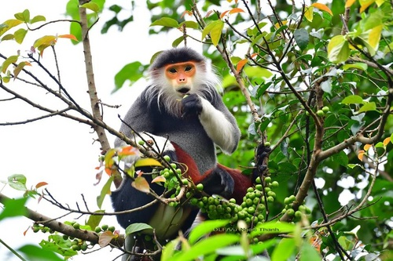

Voọc Chà vá chân đỏ hay còn gọi là Voọc Chà vá chân nâu (Pygathrix nemaeus) thuộc họ Khỉ Cựu Thế giới (để phân biệt với loài khỉ tân thế giới), và là loài có màu sắc rực rỡ nhất trong số các loài linh trưởng.
Lịch sử
Chà vá chân nâu được giới khoa học biết đến từ năm 1771 và ghi nhận xuất xứ từ "Cochin-China" nhưng lúc bấy giờ chúng được coi như một nhóm gồm ba phân loài: P. nemaeus nemaeus, P. nemaeus cinerea, và P. nemaeus nigripes. Mãi đến cuối thế kỷ 20 giới khoa học mới sắp xếp lại và kết luận rằng chúng là một loài riêng, mang tên P. nemaeus.
Phân bố và sinh cảnh sống
Thế giới: khu vực Đông Dương gồm Việt Nam, Nam Lào và phần nhỏ thuộc
Đông Bắc Campuchia.
Việt Nam: chỉ phân bố từ tỉnh Nghệ An đến Kon Tum.
Voọc chà vá chân nâu sống trong các khu rừng thường xanh mưa mùa nhiệt đới, rừng nửa rụng lá, đôi khi là rừng thứ sinh thường xanh, rừng núi đá vôi, hoặc rừng hỗn giao cây lá rộng và cây lá kim. Chúng thường chỉ sinh sống, di chuyển trên các tầng tán cây cao trong rừng nhưng thỉnh thoảng chúng vẫn đi xuống đất để uống nước hoặc ăn đất để bổ sung thêm chất khoáng.
Hình thái
Voọc chà vá chân nâu là loài có màu sắc rực rỡ nhất trong các loài linh trưởng. Chúng được biết mệnh danh là "nữ hoàng linh trưởng" cũng bởi vẻ ngoài xinh đẹp và độc đáo. Từ đầu gối đến mắt cá chân của Voọc chà vá chân nâu giống như "đôi tất dài màu nâu đỏ", cẳng tay trước của chúng như được phủ một lớp găng tay trắng. Bàn tay và đôi chân lại có màu đen. Voọc chà vá chân nâu có vành râu quai nón màu trắng và thường của con đực sẽ rậm rạp hơn. Đuôi dài màu trắng và có cụm lông trắng ở phía cuối. Phần bụng và lưng có màu xám. Bộ lông trên cơ thể là tổng hợp hài hòa của 5 màu đen, xám, trắng, nâu đỏ, cam nên còn được gọi là voọc ngũ sắc.
Cá thể trưởng thành có trọng lượng cơ thể trung bình ở con đực và con cái tương ứng 11 kg và 8,44 kg. Kích thước thân trung bình khoảng 61 cm ở con đực và 55 cm ở con cái. Đuôi thuôn và dài 55–76 cm. Ở con đực có hai túm lông trắng ở hai góc phía trên gốc đuôi hình tam giác.
Tập tính
Voọc, giống như các loài khỉ khác, thích sống bầy đàn. Chúng sống trong nhóm từ 4 đến 15 con nhưng đã từng ghi lại được nhóm lên tới 50 con. Một nhóm thường có một hoặc vài con đực và trung bình sẽ có hai con cái nếu có một con đực. Cả con cái và con đực đều biết vị trí của mình trong đàn và con đực thường có vị trí cao hơn con cái. Cả con đực và con cái cuối cùng rồi sẽ rời khỏi đàn nơi chúng được sinh ra.
Giống các loài khác thuộc họ Khỉ cựu thế giới, đuôi của chúng không dùng để cầm nắm. Đuôi chỉ được sử dụng cho một mục đích duy nhất là cân bằng. Chúng dùng tay và chân để di chuyển trong rừng. Một khi đã bắt đầu di chuyển cả nhóm sẽ được dẫn dắt bởi con đực đầu đàn, với những con đực trẻ ở phía sau, con cái và con non an toàn ở giữa. Loài voọc này sống trên cao, chúng di chuyển ở trên các tán rừng. Chúng rất nhanh nhẹn và thường có thể nhảy tới 6 mét (20 feet), với cánh tay dang rộng qua đầu, chúng đẩy chi dưới về phía trước và tiếp đất bằng 2 chân.